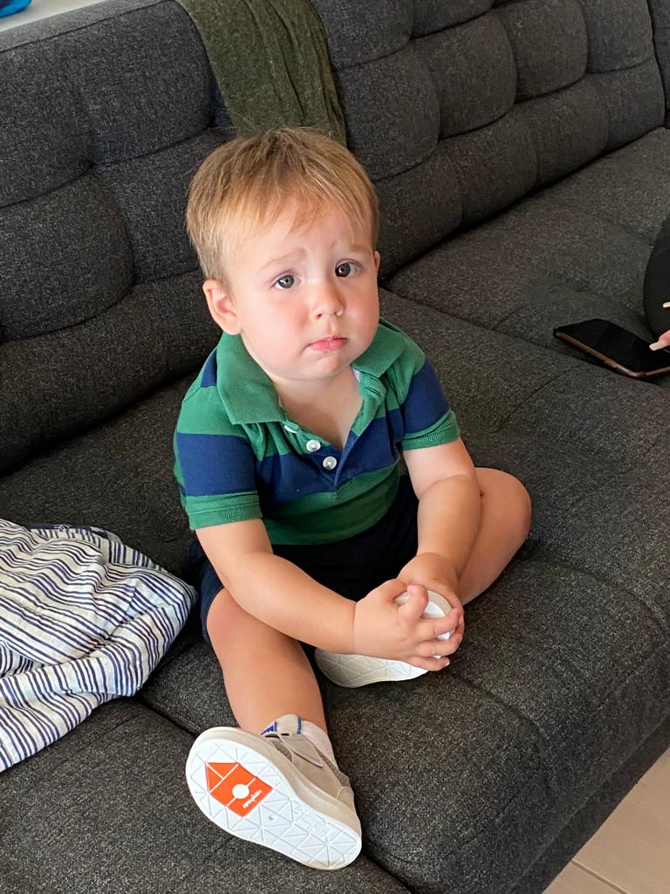

We woke up on Thursday and had our last plays with Elliot. We ate as much as we could to clear out the naughty foods from Rich & Angie’s house. Elliot looked sad to see us go and properly got his bottom lip out as Angie brought him out to wave us off.

We set off early so we could stop at UTC on the way and buy an iPhone. Just after we stopped for McDonald’s for lunch (for a last frozen Coke) we had some traffic issues as there was a van that had been on fire.
Apart from that, everything was very smooth from dropping off the car to getting on the plane. No one got more than 2 hours sleep on the plane. Freya watched more horror movies and something with a naked Harry Styles.
Again, all pretty smooth at Heathrow and Alison then drove us to Romford for our hotel stop. We arrived in almost perfect time for check-in and watching Grand Prix qualifying. After that we nipped to Bargain Madness and Greggs for some unhealthy tea before an early night ready for Formula E on Saturday to finish off our holiday.